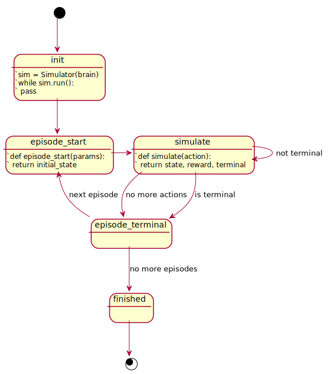

Library Overview
The Bonsai libraries known as libbonsai (C++) and bonsai_ai (Python) wrap the Bonsai API to simplify the process of building simulators in C++ and Python programming languages. This Python library is compatible with Python 2.7+ and Python 3+ on Windows 7/10, macOS, and Linux.
When the AI Engine trains with the simulator it works in a loop. First, the simulator connects and registers itself with the AI Engine. Then, the simulator sends the AI Engine a state and the value of any objectives or rewards; next, the AI Engine replies with an action. The simulator then uses this action to advance the simulation and compute a new state. This “send state, receive action” process is repeated until training stops. At any time the AI engine may stop, reconfigure, and reset the simulator. After doing so it will either restart this training loop or stop training. A single state, action, next state, loop is sometimes referred to as an “iteration”.
The Config object has a built in command line parser which can be used to override the local running environment. It comes with a set of standard switches which can be viewed with the --help option. The current default configuration is read from environment variables, a ~/.bonsai configuration file in the user’s home directory, a ./.bonsai and a ./.brains configuration file in the current working directory, command line options, and programmatically in code.
Brain Class
Manages a BRAIN instance, talks with the server backend, and contains information about the BRAIN state. In future versions will be used to upload and download Inkling to and from the BRAIN on the server.
Requires a configuration and a BRAIN name. The BRAIN name can be set in several places, and there is an order of what takes precedence over the other as follows:
Brain() >> –brain >> .brains >> .bonsai[profile] >> .bonsai[DEFAULT] >> env[BONSAI_TRAIN_BRAIN]
such that “>>” indicates a decreasing order of precedence. Note that failure to set BRAIN name in at least one of these places will result in a friendly error.
Brain(config, name)
config = bonsai_ai.Config(sys.argv)
brain = bonsai_ai.Brain(config)
print(brain)
Creates a local object for interacting with an existing BRAIN on the server.
| Argument | Description |
|---|---|
config |
Object returned by previously created bonsai_ai.Config. |
name |
BRAIN name as specified on the server. If name is empty, the BRAIN name in config is used instead. |
update()
brain.update()
Refreshes description, status, and other information with the current state of the BRAIN on the server. Called by default when constructing a new Brain object.
name
print(brain.name)
Returns the name of the BRAIN as specified when it was created.
description
print(brain.description)
Returns the user-provided description for the BRAIN.
version
print(brain.version)
Returns the current version number of the BRAIN.
latest_version
print(brain.latest_version)
Returns latest version number of the BRAIN.
Config config
print(brain.config)
Returns the configuration used to locate this BRAIN.
Config Class
Example
~/.bonsaifile
[DEFAULT]
username = admin
accesskey = None
profile = dev
[dev]
url = http://localhost:5000
username = admin
accesskey = 00000000-1111-2222-3333-000000000001
Manages Bonsai configuration environments.
Config files can be specified in the user home directory, ~/.bonsai,
or in a local directory. Configuration parameters can also be parsed from
the command line.
The profile key can be used to switch between different profiles in
one configuration file.
Config(profile)
import sys, bonsai_ai
if __name__ == "__main__":
config = bonsai_ai.Config()
print(config)
Constructs a default configuration.
| Argument | Description |
|---|---|
profile |
Optional .bonsai profile name. Will use the DEFAULT profile if not specified. |
Configurations are stored in ~/.bonsai and ./.bonsai configuration files.
The local configuration file overrides settings in the configuration file in the user home directory.
Config(argv, profile)
import sys, bonsai_ai
if __name__ == "__main__":
config = bonsai_ai.Config(sys.argv)
print(config)
Constructs a config by looking in the configuration files and parsing the command line arguments.
To see the list of command line arguments, pass in the --help flag.
| Argument | Description |
|---|---|
argv |
As passed to main(). |
profile |
Optional .bonsai profile name. Will use the DEFAULT profile if not specified. |
Unrecognized arguments will be ignored.
accesskey
my_config.accesskey == '00000000-1111-2222-3333-000000000001'
my_config.accesskey = '00000000-1111-2222-3333-000000000001'
Server authentication token. Obtained from the bonsai server. You need to set it in your config.
username
my_config.username == 'alice'
my_config.username = 'alice'
Account user name. The account you signed up with.
url
my_config.url == 'https://api.bons.ai'
my_config.url = 'https://api.bons.ai'
Server URL. Address and port number of the bonsai server. Normally you should not need to change this.
proxy
my_config.proxy == 'myproxy:5000'
my_config.proxy = 'myproxy:5000'
Proxy Server. Address and port number of the proxy server to connect through.
brain
my_config.brain == 'scarecrow'
my_config.brain = 'scarecrow'
BRAIN name. Name of the BRAIN on the server.
predict
my_config.predict == True
my_config.brain = True
Simulator mode. The mode in which simulators will run. True if running for prediction, false for training.
brain_version
my_config.brain_version == 0
my_config.brain_version = 0
BRAIN version. The version of the brain to use when running for prediction. Set to 0 to use latest version.
record_file
my_config.record_file == "foobar.json"
my_config.record_file = "foobar.json"
This property defines the destination for log recording. Additionally, the format for log recording is inferred from the file extension. Currently supported options are json and csv. Missing file extension or use of an unsupported extension will result in runtime errors.
record_enabled
my_config.record_enabled == True
my_config.record_enabled = True
record_format
my_config.record_file == "foobar.json"
my_config.record_format == "json";
Note: This property cannot be set directly. It reflects the file extension of the currently configured record_file. json or csv are valid.
Simulator Class

This class is used to interface with the server while training or running predictions against a BRAIN. It is an abstract base class, and to use it a developer must create a subclass.
The Simulator class is closely related to the Inkling file that is associated with
the BRAIN. The name used to construct Simulator must match the name of the simulator
in the Inkling file.
There are two main methods that you must override, episode_start and simulate. The diagram
demonstrates how these are called during training. Optionally, one may also override
episode_finish, which is called at the end of an episode.
| Property | Description |
|---|---|
brain |
The simulator’s Brain object. |
name |
The simulator’s name. |
objective_name |
The name of the current objective for an episode. |
episode_reward |
Cumulative reward for this episode so far. |
episode_count |
Number of completed episodes since sim launch. |
episode_rate |
Episodes per second. |
iteration_count |
Number of iterations for the current episode. |
iteration_rate |
Iterations per second. |
Simulator(brain, name)
Example Inkling:
simulator my_simulator(Config)
action (Action)
state (State)
end
Example code:
class MySimulator(bonsai_ai.Simulator):
def __init__(brain, name):
super().__init__(brain, name)
# your sim init code goes here.
def episode_start(self, parameters=None):
# your reset/init code goes here.
return my_state
def simulate(self, action):
# your simulation stepping code goes here.
return (my_state, my_reward, is_terminal)
def episode_finish(self):
# your post episode code goes here.
pass
...
config = bonsai_ai.Config(sys.argv)
brain = bonsai_ai.Brain(config)
sim = MySimulator(brain, "my_simulator")
...
Serves as a base class for running simulations. You should create a subclass
of Simulator and implement the episode_start and simulate callbacks.
| Argument | Description |
|---|---|
brain |
A Brain object for the BRAIN you wish to train against. |
name |
The name of simulator as specified in the Inkling for the BRAIN. |
Brain brain
print(sim.brain)
Returns the BRAIN being used for this simulation.
name
print("Starting ", sim.name)
Returns the simulator name that was passed in when constructed.
predict
def simulate(self, action):
if self.predict is False:
# calculate reward...
...
Returns a value indicating whether the simulation is set up to run in predict mode or training mode.
objective_name
def episode_start(self, params):
print(self.objective_name)
...
Property accessor that returns the name of the current objective from Inkling.
The objective may be updated before episode_start is called. When running
for prediction and during start up, objective will return an empty string.
episode_start(parameters, initial_state)
Example Inkling:
schema Config
UInt8 start_angle
end
schema State
Float32 angle,
Float32 velocity
end
Example code:
def episode_start(self, params):
# training params are only passed in during training
if self.predict == False:
print(self.objective_name)
self.angle = params.start_angle
initial = {
"angle": self.angle,
"velocity": self.velocity,
}
return initial
| Argument | Description |
|---|---|
parameters |
InklingMessage of episode initialization parameters as defined in inkling. parameters will be populated if a training session is running. |
initial_state |
Output InklingMessage. The subclasser should populate this message with the initial state of the simulation. |
This callback passes in a set of initial parameters and expects an initial state in return
for the simulator. Before this callback is called, the property objective_name will be
updated to reflect the current objective for this episode.
This call is where a simulation should be reset for the next round.
The default implementation will throw an exception.
simulate(action, state, reward, terminal)
Example Inkling:
schema Action
Int8{0, 1} delta
end
Example code:
def simulate(self, action):
velocity = velocity - action.delta;
terminal = (velocity <= 0.0)
# reward is only needed during training
if self.predict == False:
reward = reward_for_objective(self.objective_name)
state = {
"velocity": self.velocity,
"angle": self.angle,
}
return (state, reward, terminal)
| Argument | Description |
|---|---|
action |
Input InklingMessage of action to be taken as defined in inkling. |
state |
Output InklingMessage. Should be populated with the current simulator state. |
reward |
Output reward value as calculated based upon the objective. |
terminal |
Output terminal state. Set to true if the simulator is in a terminal state. |
This callback steps the simulation forward by a single step. It passes in
the action to be taken, and expects the resulting state, reward for the current
objective, and a terminal flag used to signal the end of an episode. Note that an
episode may be reset prematurely by the backend during training.
For a multi-lesson curriculum, the objective_name will change from episode to episode.
In this case ensure that the simulator is returning the correct reward for the
different lessons.
Returning true for the terminal flag signals the start of a new episode.
The default implementation will throw an exception.
run()
sim = MySimulator(brain)
if sim.predict:
print("Predicting against ", brain.name, " version ", brain.version)
else:
print("Training ", brain.name)
while sim.run():
continue
Main loop call for driving the simulation. Returns false when the
simulation has finished or halted.
The client should call this method in a while loop until it returns false.
To run for prediction, brain()->config()->predict() must return true.
episode_finish()
def episode_finish(self):
print('Episode:', self.episode_count,
'reward:', self.episode_reward)
This callback is called at the end of each episode. You can use it to log out statistical information, or perform post episode cleanup.
record_file
my_sim.record_file == "/path/to/foobar.json"
my_sim.record_file = "/path/to/barfoo.json"
my_sim.record_file == "/path/to/foobar.csv"
my_sim.record_file = "/path/to/foobar.csv"
Getter and setter for analytics recording file.
When a new record file is set, the previous file will be closed immediately. Subsequent log lines will be written to the new file.
enable_keys(keys, prefix=None)
if __name__ == "__main__":
config = Config(sys.argv)
brain = Brain(config)
sim = MySimulator(brain)
sim.enable_keys(["foo", "bar"])
sim.enable_keys(["baz"], "qux")
This function adds the given keys to the log schema for this writer. If one is provided, the prefix will be prepended to those keys and they will appear as such in the resulting logs. If recording is not enabled, this method has no effect.
You should enable any keys you expect to see in the logs. If you attempt to insert objects containing keys which have not been enabled, those keys will be silently ignored.
| Argument | Description |
|---|---|
keys |
A list/vector of strings to include as keys in log entries for this simulator. |
prefix |
A string used as a subdomain for the given keys. Entries will appear as <prefix>.<key> for each key in keys. Defaults to empty string. |
record_append(obj, prefix=None)
if __name__ == "__main__":
config = Config(sys.argv)
brain = Brain(config)
sim = MySimulator(brain)
sim.enable_keys(["foo", "bar"])
sim.enable_keys(["baz"], "qux")
while sim.run():
sim.record_append({
"foo": 23,
"bar": 5
})
sim.record_append({
"baz": "zabow"
}, "qux")
Adds the keys (prepended by prefix, if provied) from the given dictionary to the current log entry. If recording is not enabled, this method has no effect. If a particular subset of the keys in obj are not enabled, they will be ignored silently.
| Argument | Description |
|---|---|
obj |
A dictionary containing data to be added to the current log entry. |
prefix |
String prefix for the keys in obj. |
get_next_event()
if __name__ == "__main__":
config = Config(sys.argv)
brain = Brain(config)
sim = MySimulator(brain)
while True:
event = sim.get_next_event()
if isinstance(event, EpisodeStartEvent):
state = sim.episode_start(event.initial_properties)
event.initial_state = state
elif isinstance(event, SimulateEvent):
state, reward, terminal = sim.simulate(event.action)
event.state = state
event.reward = float(reward)
event.terminal = bool(terminal)
elif isinstance(event, EpisodeFinishEvent):
sim.episode_finish()
elif isinstance(event, FinishedEvent):
sim.close()
break
elif isinstance(event, UnknownEvent):
pass
Advance the SDK’s internal state machine and return an event for processing.
This is the primary entrypoint for the “Event Pump” interface. With this,
custom run loop implementations are possible in user code. Rather than calling
Simulator.run in a loop, communication between simulation code and Bonsai backend
can be accomplished step by step.
close()
Close the internal websocket.
Predictor Class
Example Inkling:
simulator my_simulator(Config)
action (Action)
state (State)
end
Example code:
# As a context manager:
config = bonsai_ai.Config(sys.argv)
brain = bonsai_ai.Brain(config)
predictor = Predictor(brain, "my_simulator")
with predictor:
action = predictor.get_action(state)
# Without context manager:
config = bonsai_ai.Config(sys.argv)
brain = bonsai_ai.Brain(config)
predictor = Predictor(brain, "my_simulator")
action = predictor.get_action(state)
predictor.close()
This class is used to interface with the server to obtain predictions for a specific BRAIN and is a subclass of Simulator.
The Predictor class is closely related to the Inkling file that is associated with the BRAIN.
The name used to construct Predictor must match the name of the simulator in the Inkling file.
| Argument | Description |
|---|---|
brain |
The name of the BRAIN to connect to. |
name |
The name of this simulator. Must match simulator in Inkling. |
get_action(self, state)
Receives the Inkling action when sent a state.
close(self)
Closes a websocket connection. This is recommended when predictor() is used outside of the context manager.
Logger Class
The Logger class serves as an entry point for runtime logging to stderr. All instances of Logger
share the same internal state, so enabling a particular log domain for a Logger in any scope
enables that log domain for all Logger instances in the current process.
Logger()
from bonsai_ai.logger import Logger
log = Logger()
class MySim(bonsai_ai.Simulator):
def simulate(self, action):
log.mydomain("My Log Info")
if __name__ == "__main__":
...
log.set_enabled("mydomain")
...
Return an instance of Logger that reflects the shared state of all active Loggers.
set_enabled(key)
log = bonsai_ai.logger.Logger()
log.set_enabled("foobar")
log.foobar("baz") # logs "baz" to stderr (along with timestamp and domain info)
log.barfoo("zab") # no log, no error
Enables the given log domain for all active Loggers.
| Argument | Description |
|---|---|
key |
A string describing which log domain to enable. |
set_enable_all(enable_all)
log = bonsai_ai.logger.Logger()
log.set_enable_all(True)
log.foobar("baz") # logs "baz" to stderr (along with timestamp and domain info)
log.barfoo("zab") # logs "zab" to stderr (along with timestamp and domain info)
When set, the Logger prints any message, regardless of whether the particular domain
was explicitly enabled. Corresponds to the --verbose command line flag.
| Argument | Description |
|---|---|
enable_all |
A bool describing whether verbose logging is enabled. |
Event Class
Internally, the Bonsai library uses a state machine to drive activity in user
code (i.e. advancing and recording simulator state, resetting a simulator, etc).
State transfer is driven primarily by a websocket-based messaging protocol
shared between the library and the Bonsai AI platform. For your convenience,
the details of this protocol have been hidden behind a pair of API’s, one based
on callbacks in bonsai_ai.Simulator and the other event driven.
Filling out the callbacks in bonsai_ai.Simulator and relying on
Simulator.run to invoke them at the appropriate time will be sufficient for
many use cases. For example, if you have a simulator which can be advanced,
reset, and observed in a synchronous manner from Python or C++ code, your
application is likely amenable to our callback API. However, if, for example,
your simulator is free running and communicates with your application code
asynchronously, your application will likely need to employ the event driven
API described below.
In the event-driven mode of operation, you application code should implement
its own run loop by requesting successive events from the Bonsai library and
handling them in a way that is appropriate to your particular simulation or
deployment architecture. For example, if your simulator invokes callbacks into
your code and is reset in response to some outgoing signal (i.e. not via a
method call), you might respond to an EpisodeStartEvent by setting the
appropriate flag, returning control to the simulator, and returning the
resulting state to the Bonsai platform the next time your callback gets invoked.
EpisodeStartEvent
event = sim.get_next_event()
if isinstance(event, EpisodeStartEvent):
state = sim.episode_start(event.initial_properties)
event.initial_state = state
This event is generated at the start of a training episode. It is triggered either by a terminal condition in the simulator or by the platform itself.
| Attribute | Description |
|---|---|
initial_properties |
Configuration properties for the simulator. |
initial_state |
Assign the state resulting from a model reset. |
initial_properties is the configuration sent down from the server
in the form of a dictionary matching the config specified in Inkling.
SimulateEvent
event = sim.get_next_event()
if isinstance(event, SimulateEvent):
state, reward, terminal = sim.simulate(event.action)
event.state = state
event.reward = float(reward)
event.terminal = bool(terminal)
This event is generated when an action (prediction) is ready to be fed into the simulator.
Assign values to a SimulateEvent by assigning a dictionary whose fields match
the state schema. You will need to set the values before the next
Simulator.get_next_event call. The values get sent back to the brain during
the call to Simulator.get_next_event.
| Attribute | Description |
|---|---|
action |
Next action (prediction) in the queue. |
state |
Assign the resulting state after updating the model. |
reward |
The reward calculated from the updated. |
terminal |
Whether the updated state is terminal. |
FinishedEvent
event = get_next_event()
if isinstance(event, FinishedEvent):
self.close()
Indicates that the Bonsai Platform has terminated training.
UnknownEvent
Catch-all event for other internal states. This event can be safely ignored, but it is provided for completeness and is handy for explicitly tracking state transitions from client code.